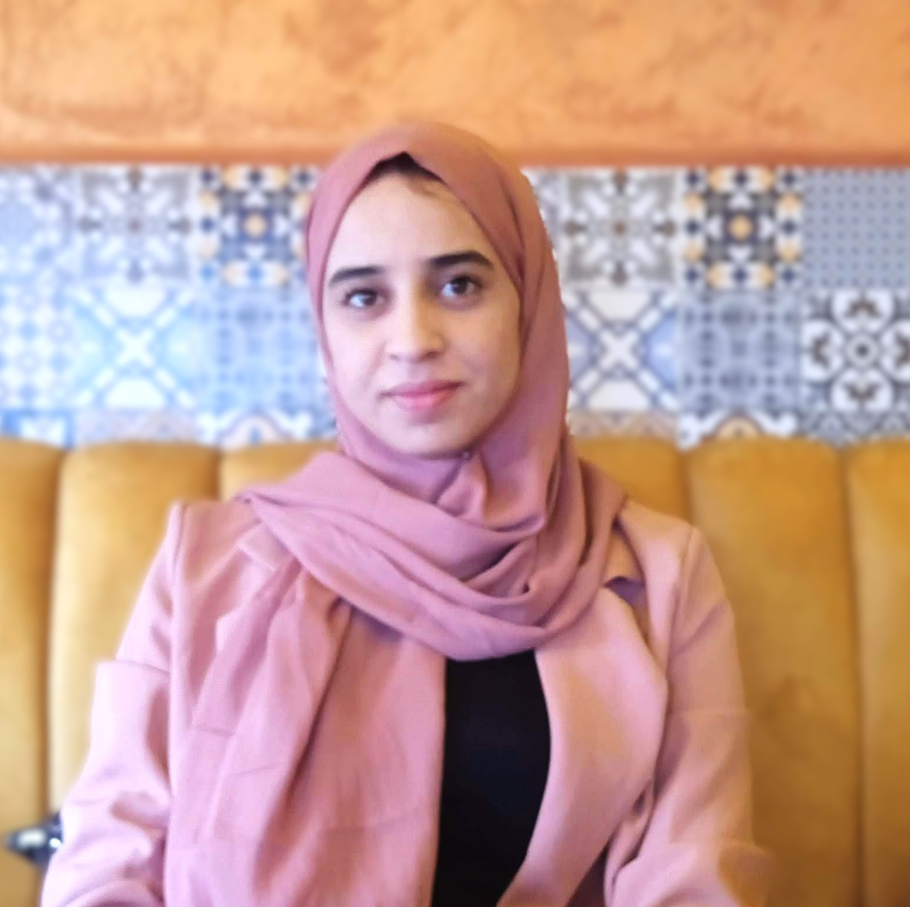

Développeuse web junior · Maroc
Nadia Ouchchikh
Master en Systèmes Embarqués et Services Numériques. Je construis des applications web complètes — du capteur à l'interface — avec Angular, React, Spring Boot et Django. Autonome, curieuse, et à l'aise aussi bien sur le front que sur le back.

Disponible
4
Frameworks front / back
4
Systèmes de bases de données
2
Projets full-stack
4
Langues parlées
Compétences
Ce que je maîtrise
Front-End
HTMLCSS
JavaScriptAngular
React
Back-End
JavaSpring Boot
DjangoNode.js
Bases de données
MySQLMongoDB
Oracle SQLCassandra
Outils & environnement
GitDockerAzure
Autres langages
PythonC
C++Android
Domaine
Systèmes embarquésIoT
Services numériques
Projets
Ce que j'ai construit
Projet académique · Full-stack
Gestion Médicale
Application web de prise et gestion de rendez-vous médicaux. Intégration complète front-end / back-end avec gestion des données utilisateurs.
Spring BootAngularMySQL
→ code source : github.com/NA35208/gestion-medicale
Projet académique · IoT
Agriculture Intelligente — Dashboard IoT
Tableau de bord web pour la visualisation en temps réel de données capteurs (pH, humidité, luminosité), avec flux de données back-end vers une interface claire.
JavaScriptDashboard temps réelCapteurs IoT
→ code source : github.com/NA35208/my-iot-app
Formation
Diplômes
2023 – 2025
Master en Systèmes Embarqués et Services Numériques
FSA, Ait Melloul
2020 – 2023
Licence en Sciences Mathématiques et Informatique
Agadir
2019 – 2020
Baccalauréat, Sciences Mathématiques A
Langues
Communication
FrançaisCourant
ArabeCourant
AmazighCourant
AnglaisIntermédiaire